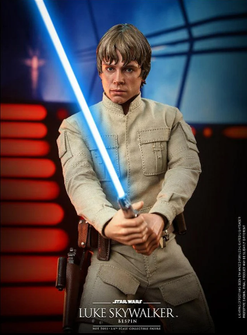

Princesa Leia

Leia é uma princesa filha adotiva do rei de Aldoram, filha biologica de Anakin/Darth Vader e irmã de Luke. Leia é uma das protagonistas dos filmes: Uma nova esperança, O imperio contrataca e O retorno de Jedi, além de ser mentora de Ray nos filmes: os ultimos jedi e A assenção skywalker.
Luke skywalker

Luke skywalker, foi considerado o ultimo jedi, iemão gemeo de Leia e filho de Padime e Anakin, luke foi o jedi que trouxe darth vader para o lado bom da força, além de treinar Ray no filme Os ultimos jedi.
Han Solo

Han solo é um vigarista espacial que pilota seu cargueiro, mileniun falcon junto com seu amigo shewbaka, ao conhecer leia se apaixonou imediatamente, vindo a se casar futuramente com a mesma. Han e leia são os pais de Ben solo/kylo hen.
Darth Vader

Anakin apos ter pesadelos com a morte de sua amada, busca poder no lado sombrio, apos o confronto contra obi wan, anakin "morre", sendo salvo pelo lorde sombrio darth sitios se tornando darth vader.
Anakin Skywalker
Anakin foi apresentado como uma criança que foi gerado pela mãe sozinho, algo por si só impossivel, quando um mestre jedi, qui gon jim o encontra, ele sente sua presença na força, e com a esperaqnça de anakin ser o escolido, prometeu o treinar, infelizmente qui gon morreu, passando a obrigação de treinar o garoto para obi wan. anakin cresceu e se tornou um jedi, e se casou com seu amor de infancia, Padime, com o tempo anakin começou a ter pesadelos com a morte de Padime, em busca de poder ele se juntou ao lado sombrio da força, e num ataque de raiva, ele mesmo atacou padime, q estava gravida, e nn resistiu ao parto.
Padime Amidala

Padime era a rainha mais jovem de Naboo, sendo depois nomeada como lider do conselho galactico jundo a Palpatine, Amidala se casou com Anakin e logo engravidou de gemeos, anakin ficou muito feliz com a noticia, mas os pesadelos e o medo de anakin em perder a esposa os levaram para o lado sombrio, quando Padime foi confrontalo, ela quase foi morta, os ferimentos fizeram com q Padime morrese no parto de Leia e Luke.
Obi Wan Kenobi

Obi Wan foi o aprendiz de qui gon jin e treinou anakin o criando como irmão, quando anakin se rebelou para o lado sombrio da força, obi wan lutou e derrotou anakin, o deixando a beira da morte, anos depois, quando luke ja avia crescido, obi wan o treinou para ser um jedi, mas obi wan foi morto por darth vader no filmr: Uma nova esperança.
Palpatine

Palpatine, se disfarçou como um simples governador galactico, mas por traz, manipulava criando seu proprio imperio, Palpatine manipulou anakin para que se tornace darth vader, apos a vitoria e a dizimação de todos os jedi, Palpatine e darth vader governaram a galaxia por longas eras, até luke conseguir fazer darth vader se rebelar contra Palpatine, assim o matando. mais tarde no nono fimle, A assenção Skywalker, palpatine retorna usando uma arte sombria para ressureição, revelando ser avô de Ray, sendo morto por ela em seguida.
Ray Palpatine
Ray foi apresentada no setimo filme, o despertar na força, ela era uma simples catadora de lixo em um planeta pobre, Jaku, mas ray tinha uma coisa, ela era sencitiva à força, ray foge de seu planeta junto de Finn um rebelde do imperio, ray encontra com han solo que se tornou uma figura paterna para a menina ja que ela nn tinha pais, no entanto, han solo foi morto em sua frente pelo proprio filho Ben Solo. ray teve varios confrontos com ben, eles quase chegaram a se unir para dominar a galaxia, mas Ray nn quis, no confronto final dos dois no nono e ultimo filme, A assenção skywalker, ray vence ben mas o salva logo após, ray descobre ser neta do emperador Palpatine, e tem um confronto com o mesmo, Ray sai vitoriosa junto a ben solo que a ajudou na batalha final, mas ben morre pelas feridas e ray se torna a ultima mestre jedi.
Finn
Finn era um stormtrooper da Primeira ordem, ele se rebelou e fugiu indo parar em um planeta pobre, Jaku, la ele conhece Ray que juntos encontram a rebelião e entram nela, la fim é um espião inteligente com conhecimento sobre a primeira ordem, conhecimentos esses que ele usa para ajudar a rebelião contra a primeira ordem.
Kylo hen

Ben Solo, filho de leia e Han solo, era aprendiz de luke, mas luke se assustou com o tamanho poder de Ben, assim atacandoo, bem se rebela contra o lado bom da força, e corre para Snoke, um lorde sith que o treinou para tornalo kylo hen. kylo era fixionado com seu avô darth vader e queria ser igual a ele, e no final foi, apos perder a ultima luta para Ray, ele teve uma redenção ao saber que sua mão havia morrido, ajudando assim Ray contra Palpatine na lutra final contra o lado sombrio.
Personagens diversos
Star wars tem uma infinidade de personages, e mesmo os sitados acima não estão com suas historias completas, para saber mais sobre cada personagem pesquise o nome do personagem no google e veja a wikipedia dele.